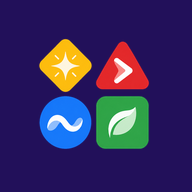

ZuqioSon güncelleme: 8 Ekim 2026
Zuqio, arkadaşlarınla yarışabileceğin bir bilgi yarışması uygulamasıdır. Bu sayfa, hangi verileri neden topladığımızı, nerede sakladığımızı ve haklarını anlatır. Zuqio şu an test aşamasındadır; bu metin de uygulamayla birlikte güncellenir.
Reklam göstermiyoruz, analiz (istatistik) aracı kullanmıyoruz ve verilerini satmıyoruz.
Hesap girişi ve veri tabanı için Google’ın Firebase hizmetini kullanıyoruz (Firebase Authentication ve Realtime Database). Veri tabanı Avrupa’daki (Belçika) bir sunucudadır. Uygulama GitHub Pages üzerinden, yazı tipleri ise Google Fonts üzerinden yüklenir; bu isteklerde IP adresin ilgili şirketlere ulaşır. Bunların dışında üçüncü taraflarla veri paylaşmayız; yasal bir zorunluluk olmadıkça kimseye vermeyiz.
PDF’ten soru üretme: Bu özelliği kullanırsan seçtiğin PDF, soru ve özet hazırlanması için Google’ın Gemini yapay zekâ hizmetine gönderilir (Firebase AI Logic üzerinden). PDF’i Zuqio sunucularında saklamayız; yalnızca ürettiğin özet ve sorular senin Zuqio’larının içinde kaydedilir. Gönderilen içerik Google’ın kendi koşullarına tabidir. Bu yüzden kişisel, gizli ya da telifli belgeleri yükleme.
Diğer oyuncular takma adını, avatarını, çerçeveni, puanını ve liderlik tablosundaki sıranı görür. E-posta adresini görmezler. Aylık ödülü kazanırsan takma adın “geçen ayın kazananı” olarak diğer oyunculara gösterilebilir. E-posta adresine yalnızca Zuqio yöneticileri erişebilir ve bunu ödül göndermek gibi hizmetle ilgili işler için kullanırız.
Hesabın açık olduğu sürece. Hesabını silersen profilin, jetonların, son dönemlere ait liderlik ve ödül puanların ve hazırladığın quizler silinir; Firebase hesabın da kaldırılır. Gönderdiğin hata bildirimleri ve eski odalardaki oyuncu kayıtları gibi küçük kalıntılar kısa süre içinde ya da yönetici tarafından temizlenir.
Zuqio 13 yaşından büyükler içindir. 18 yaşından küçükler uygulamayı ebeveynlerinin bilgisi ve izniyle kullanmalıdır. 13 yaşından küçük birine ait bir hesap fark edersek hesabı sileriz.
Verilerin Firebase’in erişim kuralları ve Google’ın altyapı güvenliği ile korunur. Hiçbir sistem tamamen risksiz değildir; ancak makul önlemleri almaya çalışıyoruz.
Bu politikayı güncellediğimizde yukarıdaki tarihi değiştiririz. Önemli değişiklikleri uygulamada duyururuz.
Sorular ve talepler için: destek@playzuqio.com ya da Instagram @playzuqio.